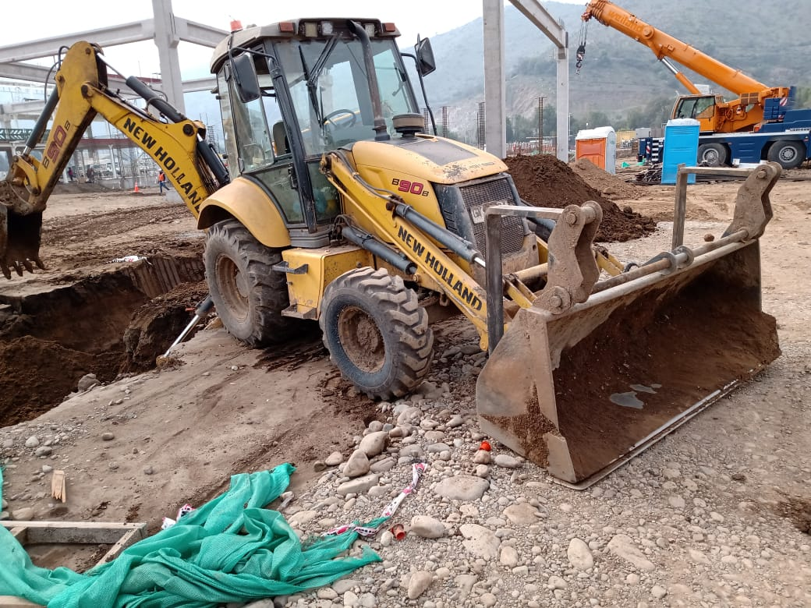
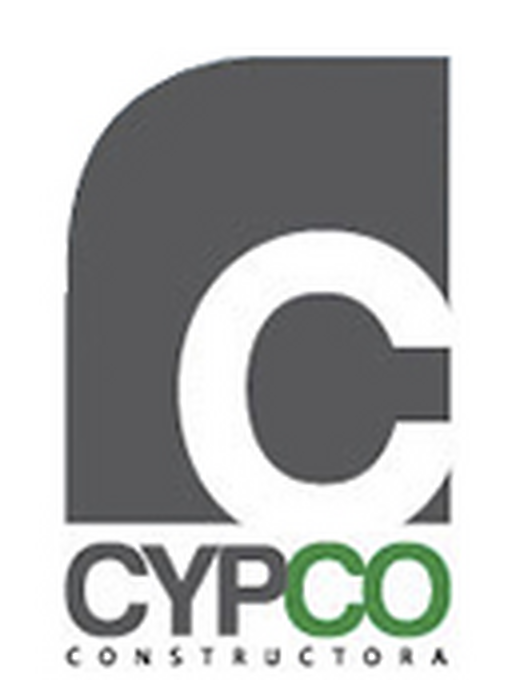
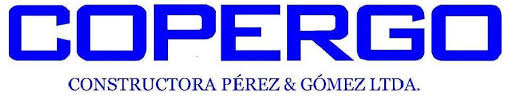
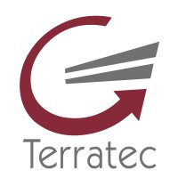
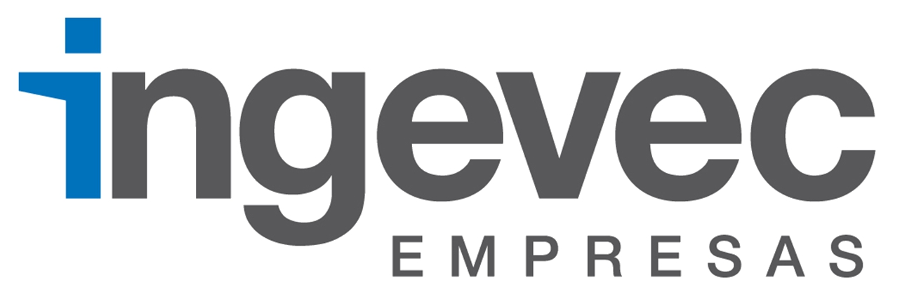
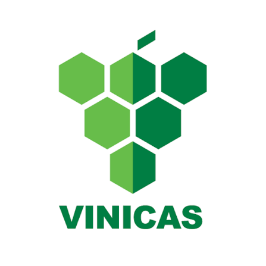
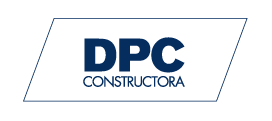

Arriendo de retroexcavadoras
Equipos versátiles para excavación, carga, movimiento de material y distintas tareas de construcción.

Región Metropolitana · Desde 2010
Arriendo de retroexcavadoras con equipos confiables, atención directa y soporte técnico en terreno.
+56 9 8819 5585Soluciones para tu proyecto
Nos especializamos en retroexcavadoras New Holland por su versatilidad y confiabilidad. Nuestro equipo trabaja para entregar continuidad operacional y respuestas rápidas ante cualquier necesidad.
Equipos versátiles para excavación, carga, movimiento de material y distintas tareas de construcción.
Alternativas con tercera función y horquilla para adaptarse a los requerimientos de cada faena.
Stock de repuestos y asistencia técnica para entregar soluciones rápidas y reducir detenciones.
Nuestra maquinaria
La disponibilidad cambia según cada proyecto. Contáctanos para confirmar el equipo adecuado y recibir una cotización.

Retroexcavadora


Accesorios
Configuraciones disponibles para ampliar las capacidades del equipo según el tipo de trabajo.
Solicitar información →Catálogo en actualización. Las especificaciones se presentan como referencia y deben confirmarse al cotizar.
DesdeSobre nosotros
Arriendo de Maquinarias Tasso nació para responder a las necesidades de equipamiento de la industria de la construcción, combinando maquinaria confiable, personal idóneo y soporte técnico especializado.
Entendemos que el avance de nuestros clientes también es nuestro avance. Por eso privilegiamos la comunicación directa, el cumplimiento y la continuidad del servicio.
Conversemos sobre tu proyecto →Experiencia que genera confianza






Cotiza tu arriendo
Atendemos proyectos en la Región Metropolitana. Escríbenos o llámanos para revisar disponibilidad, ubicación y características del trabajo.